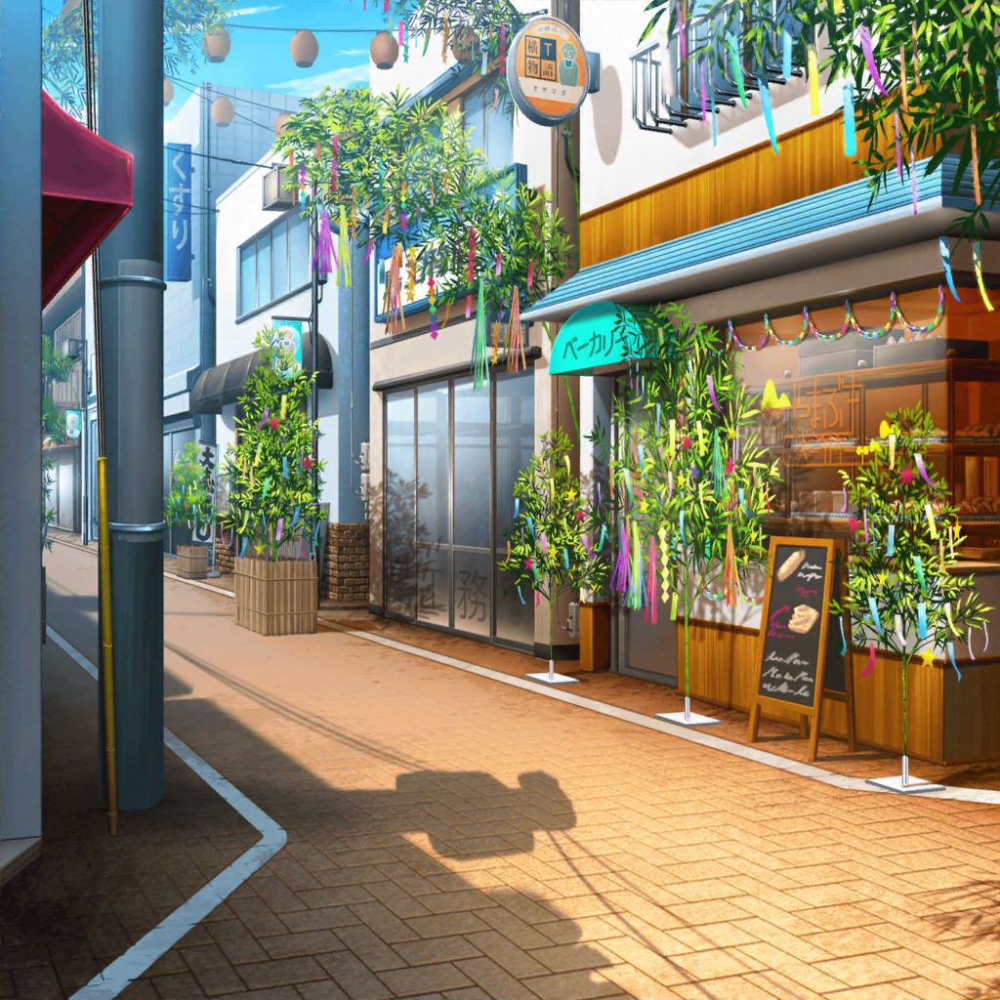

商店街
はぐみ
よし！ 飾り付けも終わったし、
これでいよいよ七夕が来るなーって感じする！
沙綾
ふふ。
ずいぶんとご機嫌だね、はぐみ
はぐみ
あ、さーや！
七夕の飾り付けが楽しくって！
はぐみ
クリスマスやお正月もそうだけど、
こうして商店街全体を季節ごとに飾るのって
なんだかお祭りみたいでワクワクするんだ！
沙綾
その気持ちわかるなー。
いつもの風景が少し変わるだけで、
気持ちが弾んでくるよね
沙綾
うちもそろそろ飾り付けを終わらせないとなー
はぐみ
あ！ ウチはもう終わるから、
さーやのほうの飾り付け手伝ってあげるよ！
沙綾
本当に！？ ありがとう、助かるよー

やまぶきベーカリー
はぐみ
わあぁっ！ おりひめさまとひこぼしさまだ！
これ、折り紙で作ったの！？
沙綾
そうだよ。
純と紗南と一緒に、三人で作ったんだ。
わりと良くできてるでしょ？
はぐみ
へぇー、すごくいい感じ！
これを、ガラスの内側に貼っていけばいいのかな？
沙綾
そうそう！
斜め上から反対側の端に向かって天の川が
流れてるみたいなイメージにしたいんだ
はぐみ
はーい！ 了解っ！
沙綾
それにしても、もうじき七夕かー……
すっかり夏になったねー
はぐみ
あ、そういえば、とーちゃんが今年も商店街のみんなで
バーベキューしようって言ってたよ！
沙綾
あ、うれしい！
商店街のバーベキューは、恒例行事みたいなものだもんね！
今からすごく楽しみ！
沙綾
純と紗南にも教えてあげなきゃ。
あの二人も、バーベキュー楽しみにしてるから
はぐみ
まだ日にちも決まってないのに、
とーちゃん、すでに気合い入ってるよー
沙綾
はぐみのお父さんがバーベキューにかける情熱って、
かなりのものだもんね
沙綾
この前のバーベキューも、すっごい本格的だったでしょ？
なんだっけ、あれは……
沙綾
大きなお肉の塊を串に刺して、そのまま焼いたやつ……
あれ、名前が出てこない……
はぐみ
シュラスコだよっ！
ブラジルの肉料理だって、とーちゃんが言ってた！
沙綾
そうそれ！
すごい迫力だったよねー。
味も最高だったなー
沙綾
あと燻製も、その場で作ってたよね
はぐみ
あの燻製器はね、
とーちゃんが自分で作ったんだよ！
沙綾
え？ あれって手作りだったの？
はぐみ
とーちゃんは商店街のみんなと
バーベキューするのが大好きだからね！
毎回、すっごい気合い入れてるんだ！
沙綾
さすが北沢家って感じ。
その血を受け継いで、はぐみも
バーベキューの火を起こすのうまいよね？
はぐみ
そうかな～、えへへ～♪
沙綾
私、あんなにうまく炭に火をつけられないんだけど……
なにかコツとかってあるの？
はぐみ
コツって言うか、バーベキューの前に
とーちゃんが炭をしっかり乾かしてるんだよ
はぐみ
そうすると、火が点きやすくなるんだって
沙綾
なるほど。
そんな秘密があったんだ
はぐみ
あと、炭を置く時に、ちゃーんと隙間を開けないと
ダメだって、とーちゃんが言ってたよ。
そうすると空気が通ってよく燃えるんだって
沙綾
なるほどねー。
こんな話をしてたら、ますますバーベキューが
待ち遠しくなってくるね
はぐみ
はぐみもっ！
そういえば、とーちゃんがバーベキューで作る料理も
研究してるって言ってた！
沙綾
ふふ、そうなんだ。
なんか、はぐみの話聞いてたら、
私もお父さんにいろいろ教えてもらいたくなっちゃった
沙綾
今度の休みの日、
お父さんと一緒にパンを作ってみようかな？
沙綾
……あ、そうだ！
いいこと思いついた！
はぐみ
ん？ どうしたのさーや？
沙綾
うちもバーベキューに持っていく
新作のパンを作ってみるよ。
お父さんといろいろ相談しながら
はぐみ
わ！ それすっごくいいよ！
沙綾
それじゃあ、次のバーベキューは
山吹家の新作パン、期待しててね！